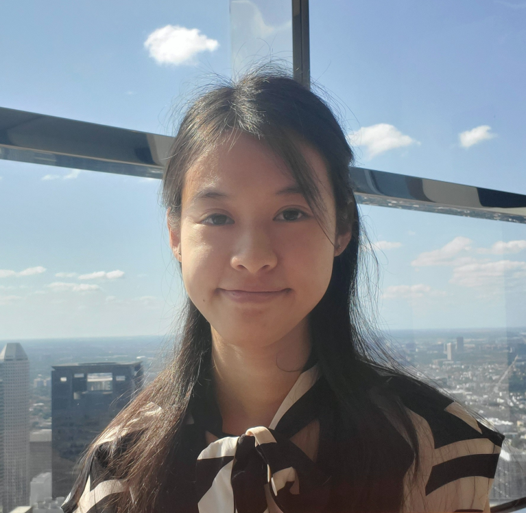

About

Hello! My name is Carol Geng, and I am from Houston, Texas. I am currently a sophomore at Texas A&M
University pursuing a Bachelor’s degree in Computer Science with minors in Art and Mathematics. I have
always been enjoyed math and science,
and I love problem solving and experimenting with new ideas and concepts, which led me to pursue the STEM
field. Additionally, I am involved in both the University Honors and Engineering Honors programs in order to
elevate my learning experience towards future endeavors. Outside of academics, I enjoy digital art and
nurturing plants! Feel free to look around my website, and check out what I'm currently been doing!